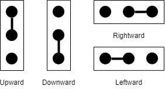
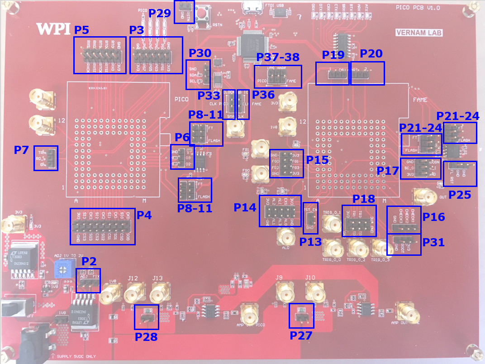
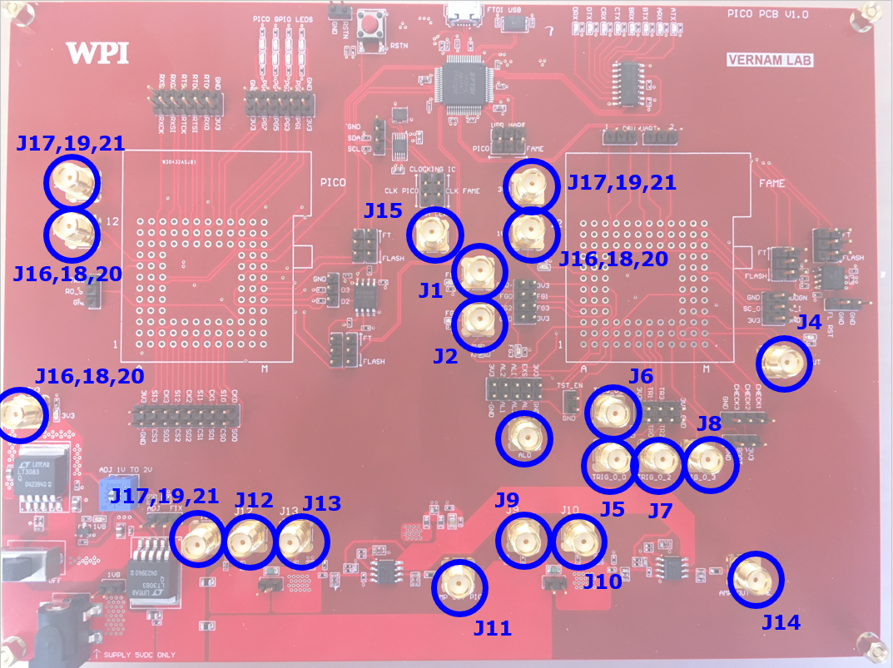

PicoPCB¶
Overview¶
- The PicoPCB is a test platform for two different chips: FAMEv2 and Picochip. PicoPCB provides the following support functionality for testing FAMEv2 and Picochip: progammable clock generation, power control, passive power measurement, flash programming, user UART.
- PicoPCB has some initial configurations have to be made before the power up. These configurations decide several modes of operation. The configurations are power supply mode, clocking mode, FAMEv2 booting, flasing the chips and setting the UART channels. These configurations are made with switcher headers. Switching can be made by shorting the necessary two headers on the connector as shown in the following figure. Each of these headers are also explained below. Ayntime when the user wants to change a direction of a switching header, the PicoPCB should be turned off and should be turned on after making the changes.

Switching header shorting directions
- Before the power up, at least the following configurations must be done: power mode, clocking and chip flashing.
- PicoPCB has two regulators supplying the board. These regulators provide 3.3V and 1.8V outputs. 3.3V output is used for chip I/Os and the rest of the board while the 1.8V output is used for chip cores. 1.8V output is configurable using a switching header and a potentiometer. The output is fixed to 1.8V as default. When the user wants to supply the chip cores other than a 1.8V output, the shorting jumper should be placed leftward and the output voltage can be adjusted between 1V and 2V using the potentiometer with a screwdriver. In either case, there MUST be a shorting jumper on this switching header, otherwise the output will be floating.
- Picochip has two clock sources that can be swithced between for different applications. One clock source is an SMA connector. This connector is able to supply both chips. In order to supply a chip using this connector, the user should place a shorting jumper downwards on the the related swithcer header. Also, placing the jumper upwards means the chip is supplied from the clocking IC. There is a switcher header for each chip. On the clocking IC, two different clock channels supply each of these swithces. On the other hand, one SMA connector supplies both switches.
- PicoPCB has an FTDI FT4232HL USB bridge to handle the clocking IC configuration, user UART communication, DSU UART communication and flash ICs configurations. The configuration of the clocking IC is made via an I2C line, FTDI is able to provide necessary I2C transactions with its MPSSE engine to set the clocking IC. Another FTDI channel is the one that is used for user UART communications from both chips, this is a single channel and must be configured using the swithces to select the communicating chip. One other channel is used for DSU UART of FAMEv2 chip. As the FAMEv2 has two DSU UARTs there are two swiching headers to select the one for communication. The last cannel of the FTDI is used for flash ICs. This line is an SPI line supplying both chips. When the user wants to load a program into a flash IC, the switcing headers around that flash IC must be shorted in the direction of FT signs (if the switching headers are shorted in the direction of FLASH signs, this means that the flash IC is connected to the chip(FAME of PICO) instead of the FTDI device). This will connect that flash IC to the FT device. While making these configurations at one side of the PCB, the shorting jumpers around the other flash IC must be completely removed to keep that IC out of the communication.
- PicoPCB Schematics:
PDF

PicoPCB Block Diagram

PicoPCB Top Layer View
Jumper Settings¶

PicoPCB Jumper Locations
| Symbol | Pins | Function |
|---|---|---|
| P1 | 2 | 5v barrel connector 2.5x5.5mm |
| P2 | 1x3 | Select between fixed/adj voltage supply |
| P3 | 2x6 | PICO GPIO pins |
| P4 | 2x9 | PICO SPI pins |
| P5 | 2x6 | PICO RO control interface |
| P6 | 1x3 | PICO Flash ext access bits d2 d3 |
| P7 | 1x3 | PICO TRNG and RO ST |
| P8 | 1x3 | PICO/FTDI Flash select CK |
| P9 | 1x3 | PICO/FTDI Flash select CS |
| P10 | 1x3 | PICO/FTDI Flash select D0 |
| P11 | 1x3 | PICO/FTDI Flash select D1 |
| P12 | NA | NA |
| P13 | 1x2 | PICO permanent reset |
| P14 | 2x5 | FAME ALARM pins |
| P15 | 2x5 | FAME GPIO pins |
| P16 | 1x4 | FAME CHECK pins |
| P17 | 2x3 | FAME SCAN pins |
| P18 | 2x4 | FAME TRIG pins |
| P19 | 1x3 | FAME User Uart Rx1/Rx2 select |
| P20 | 1x3 | FAME User Uart Tx1/Tx2 select |
| P21 | 1x3 | FAME/FTDI Flash select CK |
| P22 | 1x3 | FAME/FTDI Flash select CS |
| P23 | 1x3 | FAME/FTDI Flash select MOSI |
| P24 | 1x3 | FAME/FTDI Flash select MISO |
| P25 | 1x3 | FAME Flash Reset |
| P26 | usb | micro b usb connector |
| P27 | 1x2 | FAME shunt bypass |
| P28 | 1x2 | PICO shunt bypass |
| P29 | 1x2 | Reset Hold |
| P30 | 1x3 | Clock IC programming I2C |
| P31 | 1x3 | FAME Boot select |
| P32 | 1x2 | 1v8 testpoint |
| P33 | 1x3 | PICO CLK source select |
| P34 | NA | NA |
| P35 | NA | NA |
| P36 | 1x3 | FAME CLK source select |
| P37 | 1x3 | FTDI User TX mux FAME/PICO |
| P38 | 1x3 | FTDI User TX mux FAME/PICO |
- P2: This jumper selects between a constant regulated voltage supply and a variable one. One of these two selections MUST be made for the board. The variable voltage supply can be adjusted using the ADJ potentiometer on the left of the jumper.
SNA Connectors¶

PicoPCB SNA Locations
| Symbol | Function |
|---|---|
| J1 | FAME GPIO 0 |
| J2 | FAME GPIO 1 |
| J3 | FAME ALARM OUT |
| J4 | FAME CLK OUT |
| J5 | FAME TRIG OUT 0 |
| J6 | FAME TRIG OUT 1 |
| J7 | FAME TRIG OUT 2 |
| J8 | FAME TRIG OUT 3 |
| J9 | FAME 1v8 REG OUT |
| J10 | FAME 1v8 CHIP IN |
| J11 | FAME POWER OUT |
| J12 | PICO 1v8 REG OUT |
| J13 | PICO 1v8 CHIP IN |
| J14 | PICO POWER OUT |
| J15 | SMA CLK |
| J16 | 1v8 NET REG SIDE |
| J17 | 3v3 NET REG SIDE |
| J18 | 1v8 NET FAME SIDE |
| J19 | 3v3 NET FAME SIDE |
| J20 | 1v8 NET PICO SIDE |
| J21 | 3v3 NET FAME SIDE |